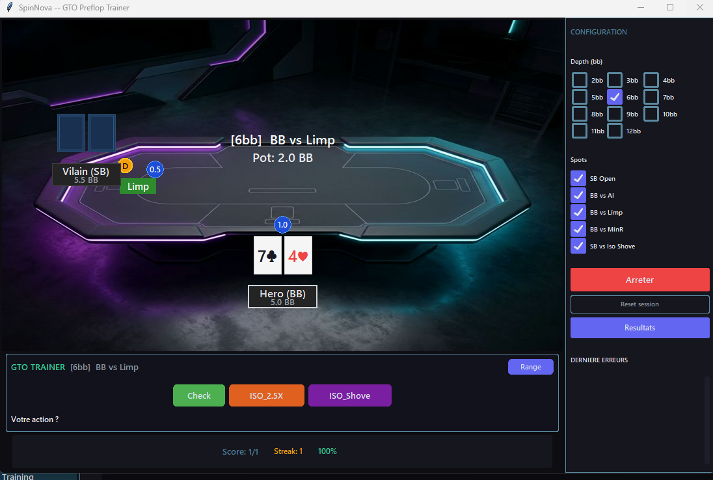
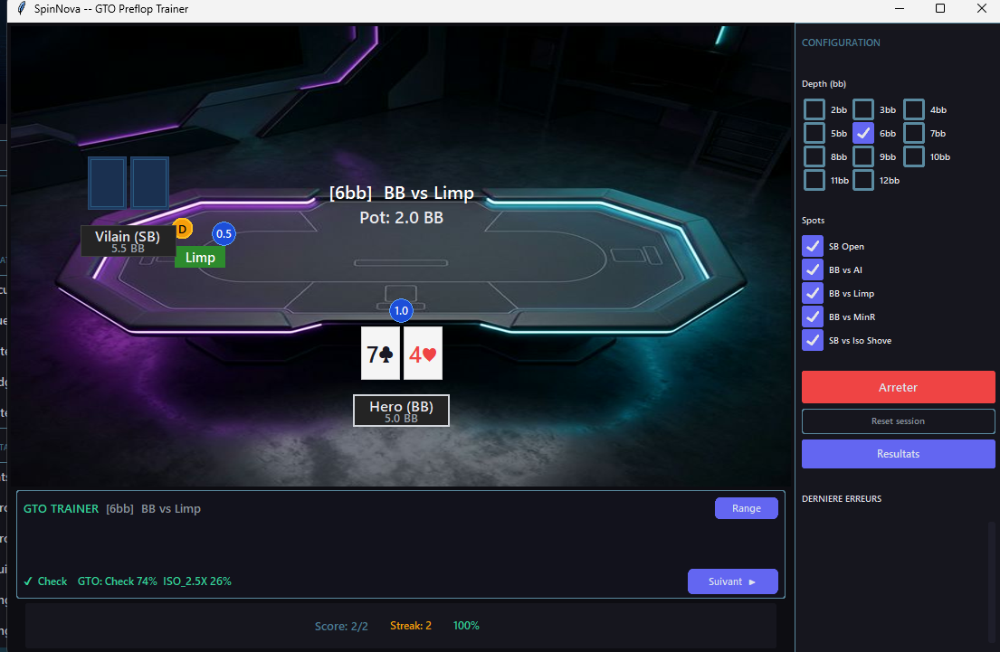
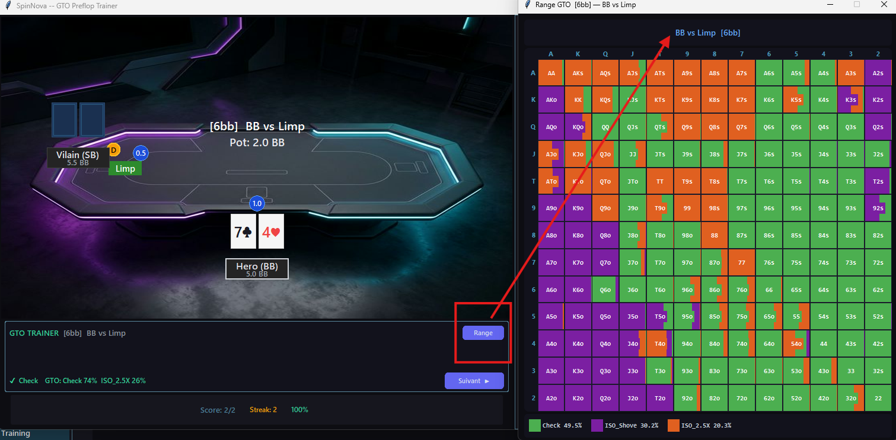

Table simulée avec quiz interactif. Choisissez l'action correcte, comparez aux fréquences GTO optimales, et progressez spot par spot.

GTO Trainer — Quiz preflop sur table simulée avec cartes, blinds et positions

Feedback immédiat avec les fréquences GTO

Configuration, scores et résultats par spot
Surface de jeu réaliste avec cartes, blinds, positions et stacks. Vous êtes en situation réelle — Hero en bas, Villain en face.
Choisissez parmi Fold, Limp, Call, Raise, All-In selon la situation. Feedback immédiat avec les fréquences GTO exactes.
Score en temps réel, streak, accuracy et stats persistantes par spot sauvegardées en base de données.
Après chaque réponse, visualisez la grille 13×13 complète avec toutes les fréquences GTO pour le spot en cours.
Depth configurable de 2bb à 12bb — cochez les profondeurs que vous voulez travailler.
Les ranges sont calculées par des solvers professionnels pour les situations Heads-Up preflop en Spin & Go. Chaque depth (2-12bb) a ses propres ranges optimales.
Oui ! Chaque réponse est enregistrée en base de données. Vous pouvez suivre votre progression par spot dans l'onglet Résultats et identifier les situations où vous faites le plus d'erreurs.
Le Range Training vous entraîne sur vos propres ranges personnalisées (que vous avez dessinées dans le Range Editor). Le GTO Trainer vous teste contre les fréquences GTO optimales calculées par solver — c'est l'étalon de référence.
Construisez vos ranges dans le Range Editor, puis testez-les dans le Range Training.